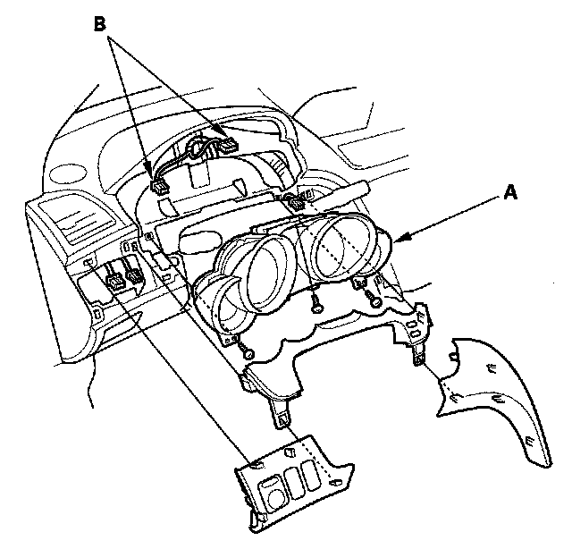

Instrument Cluster / Carrier: Service and Repair
Gauge Control Module ReplacementNOTE: Before replacing the gauge control module, do the "Rewriting the ODO DATA and Transferring the Smart Maintenance on a NEW Gauges.
1. Remove the parts shown:
- Driver's switch panel.
- Instrument fascia.

2. Remove the screws from the gauge control module (A).
3. Disconnect the connectors (B), and remove the gauge control module.
4. Install the gauge in the reverse order of removal.